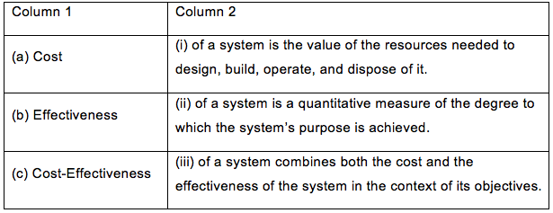
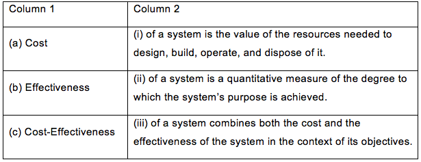
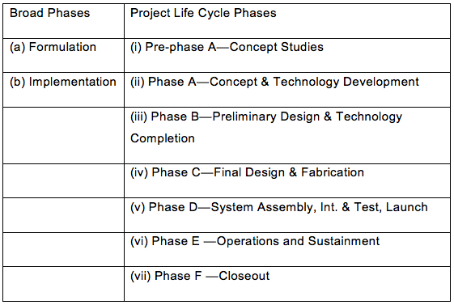
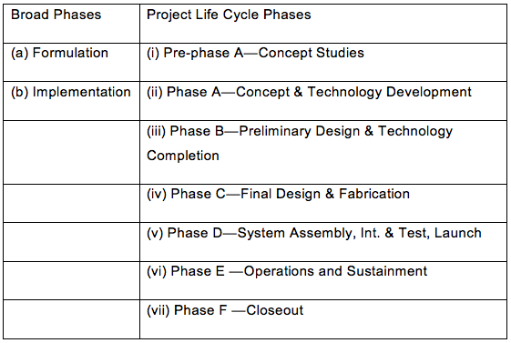

1
Arrange the following steps of systems engineering approach in the most appropriate sequence:
(a) Creation of alternative system design concepts
(b) Selection and implementation of the best design
(c) Identification and quantification of systems goals
(d) Performance of design trades
(e) Verification that the design is properly built and integrated
(f) Assessment of how well the system meets the goals
Select from the list of choices below.
(a) Creation of alternative system design concepts
(b) Selection and implementation of the best design
(c) Identification and quantification of systems goals
(d) Performance of design trades
(e) Verification that the design is properly built and integrated
(f) Assessment of how well the system meets the goals
Select from the list of choices below.
Choose one answer.
| A. b, c, e, a, f, d | ||
| B. c, d, e, b, a, f | ||
| C. c, a, d, b, e, f | ||
| D. b, e, c, a, f, d | ||
| E. a, f, c, d, e, b |
Question
2
As new systems become larger and more complex, the need for system engineers:
Choose one answer.
| A. continues to decline at a steady pace. | ||
| B. continues to rapidly grow. | ||
| C. practically remains the same regardless of the size or complexity. | ||
| D. is not influenced by these factors. | ||
| E. only increases if the new system is an interplanetary space mission. |
Question
3
Realizing that systems engineering is developed on the lessons of the past, systems or pieces built by different subsystems groups:
Choose one answer.
| A. always performed system functions. | ||
| B. never failed at the interfaces. | ||
| C. never experienced cost overruns or schedule delays. | ||
| D. often resulted in unusable systems. | ||
| E. always experienced cost overruns or schedule delays. |
Question
4
From a process perspective, the product verification and product validation processes are fundamentally different. Verification of a product shows that:
Choose one answer.
| A. it meets the expectations of the customer and other stakeholders. | ||
| B. the product accomplishes the intended purpose in the intended environment. | ||
| C. the product can meet each "shall" statement as proven through performance of a test, analysis, inspection, or demonstration. | ||
| D. testing is conducted under realistic conditions (or simulated conditions) on end products for the purpose of determining the effectiveness and suitability. | ||
| E. All of the above |
Question
5
From a process perspective, the product verification and product validation processes are fundamentally different. Validation of a product shows that:
Choose one answer.
| A. it meets the expectations of the customer and other stakeholders as shown through performance of a test, analysis, inspection, or demonstration. | ||
| B. the product accomplishes the intended purpose in the intended environment. | ||
| C. the product can meet each "shall" statement as proven through performance of a test, analysis, inspection, or demonstration. | ||
| D. testing is conducted under realistic conditions (or simulated conditions) on end products for the purpose of determining the effectiveness and suitability. | ||
| E. A, B, and D |
Question
6
Verification testing:
Choose one answer.
| A. relates back to the ConOps document and is conducted under realistic conditions (or simulated conditions). | ||
| B. relates to determining the effectiveness and suitability of the product for use in mission operations by typical users. | ||
| C. shows that the product accomplishes the intended purpose in the intended environment. | ||
| D. relates back to the approved requirements set and can be performed at different stages in the product life cycle. | ||
| E. All of the above |
Question
7
Validation testing:
Choose one answer.
| A. relates back to the ConOps document and is conducted under realistic conditions (or simulated conditions). | ||
| B. relates to determining the effectiveness and suitability of the product for use in mission operations by typical users. | ||
| C. shows that the product can meet each "shall" statement as proven through performance of a test, analysis, inspection, or demonstration. | ||
| D. relates back to the approved requirements set and can be performed at different stages in the product life cycle. | ||
| E. All of the above |
Question
8
Demonstrate your understanding of the cost effectiveness of systems engineering by matching each element in Column 1 with a corresponding element in Column
2. Choose the correct response from the list of responses below the table.


Choose one answer.
|
A. (a) - (ii) (b) - (i) (c) - (iii) |
||
|
B. (a) - (i) (b) - (ii) (c) - (iii) |
||
|
C. (a) - (iii) (b) - (ii) (c) - (i) |
||
|
D. (a) - (i) (b) - (iii) (c) - (ii) |
||
|
E. (a) - (iii) (b) - (i) (c) - (ii) |
Question
9
When finding and eliminating "wasted motion," teams need to take the following actions:
(i) Determine if every part of the process results in the teams' desired outcome.
(ii) Remove the wasted motion.
(iii) Look closely at the process.
In what order should teams take the actions listed above? (Select from the list below.)
(i) Determine if every part of the process results in the teams' desired outcome.
(ii) Remove the wasted motion.
(iii) Look closely at the process.
In what order should teams take the actions listed above? (Select from the list below.)
Choose one answer.
| A. i, iii, ii | ||
| B. iii, i, ii | ||
| C. ii, i, iii | ||
| D. ii, iii, i | ||
| E. i, ii, iii |
Question
10
The Myers-Briggs consists of 16 different personality types. For the personality INTP, the energy is derived from (i) inwardly world OR (ii) outwardly
world AND the way this personality deals with outside world is characterized by (iii) judging OR (iv) perceiving. Select the answer below that best
identifies this personality:
Choose one answer.
| A. i & iii | ||
| B. ii & iii | ||
| C. ii & iv | ||
| D. i & iv |
Question
11
Match the right correlation of each project life cycle phase with the two broad phases. Choose the correct response from the list of responses below the
table.


Choose one answer.
|
A. (a) - (i), (ii), (iv) (b) - (iii), (v), (vi), (vii) |
||
|
B. (a) - (i), (ii), (iii), (iv) (b) - (v), (vi), (vii) |
||
|
C. (a) - (i), (ii), (iii) (b) - (iv), (v), (vi), (vii) |
||
|
D. (a) - (i), (ii) (b) - (iii), (iv), (v), (vii) |
||
|
E. (a) - (i), (ii), (v), (vi) (b) - (iii), (iv), (vii) |
Question
12
From the table below, match the reviews with the broad phases where the review is most likely to occur in NASA's life cycle. Choose the correct response
from the list of pairs of responses below the table.

Choose one answer.
|
A. (a) - (i), (ii) (b) - (ii), (iii), (iv) |
||
|
B. (a) - (i), (ii) (b) - (iii), (iv) |
||
|
C. (a) - (i), (ii) (iii) (b) - (iii), (iv) |
||
|
D. (a) - (i), (ii), (iii) (b) - (iv) |
||
|
E. (a) - (i) (b) - (ii), (iii), (iv) |
Question
13
"NASA Space Flight Program and Project Management Requirements" defines the major NASA life-cycle phases as Formulation and Implementation. The broad
purpose of the program Formulation is to:
Choose one answer.
| A. recognize the need or the discovery of an opportunity and proceed through various stages of development to a final disposition. | ||
| B. decompose the program/project life cycle into phases and organize the entire process into more manageable pieces. | ||
| C. establish a cost-effective program that is demonstrably capable of meeting Agency and mission directorate goals and objectives. | ||
| D. execute the program and constituent projects and ensure the program continues to contribute to Agency goals and objectives within funding constraints. | ||
| E. devise various feasible concepts from which new projects (programs) can be selected. |
Question
14
"NASA Space Flight Program and Project Management Requirements" defines the major NASA life-cycle phases as Formulation and Implementation. The broad
purpose of the program Implementation is to:
Choose one answer.
| A. recognize the need or the discovery of an opportunity and proceed through various stages of development to a final disposition. | ||
| B. decompose the program/project life cycle into phases and organize the entire process into more manageable pieces. | ||
| C. establish a cost-effective program that is demonstrably capable of meeting Agency and mission directorate goals and objectives. | ||
| D. execute the program and constituent projects and ensure the program continues to contribute to Agency goals and objectives within funding constraints. | ||
| E. devise various feasible concepts from which new projects (programs) can be selected. |
Question
15
Each phase of systems engineering is separated by a:
Choose one answer.
| A. control gate. | ||
| B. concept study. | ||
| C. pre-phase A. | ||
| D. formulation. | ||
| E. need for a higher level manager. |
Question
16
The NASA life-cycle phases of Formulation and Implementation divide into the following seven incremental pieces: (i) Pre-Phase A, (ii) Phase A, (iii) Phase
B, (iv) Phase C, (v) Phase D, (vi) Phase E, and (vii) Phase F. The purpose of Pre-Phase A is to:
Choose one answer.
| A. produce a broad spectrum of ideas and alternatives for missions from which new programs/projects can be selected. | ||
| B. determine the feasibility and desirability of a suggested new major system and establish an initial baseline compatibility with NASA's strategic plans. | ||
| C. define the project in enough detail to establish an initial baseline capable of meeting mission needs. | ||
| D. conduct the mission and meet the initially identified need and maintain support for that need. | ||
| E. implement important changes based on stakeholder input |
Question
17
Every NASA life-cycle phase is associated with one or more phase boundaries or project reviews. The review(s) associated with Pre-Phase A is/are:
Choose one answer.
| A. PDR (Preliminary Design Review) and Safety Review. | ||
| B. SRR (System Requirements Review), MDR (Mission Definition Review) and SDR (System Definition Review). | ||
| C. CDR (Critical Design Review), PRR (Production Readiness Review), SIR (System Integration Review) and Safety Review. | ||
| D. MCR (Mission Concept Review) and Informal Proposal Review. | ||
| E. TRR (Test Readiness Review), SAR (System Acceptance Review), ORR (Operational Readiness Review), FRR (Flight Readiness Review), System functional and physical configuration audits and Safety Review. |
Question
18
The NASA life-cycle phases of Formulation and Implementation are divided into the following seven incremental pieces: (i) Pre-Phase A, (ii) Phase A, (iii)
Phase B, (iv) Phase C, (v) Phase D, (vi) Phase E, and (vii) Phase F. The purpose of Phase A is to:
Choose one answer.
| A. complete the detailed design of the system (and its associated subsystems, including its operations systems), fabricate hardware, and code software. | ||
| B. assemble and integrate the products and create the system, meanwhile developing confidence that it will be able to meet the system requirements; conduct launch and prepare for operations. | ||
| C. conduct the mission and meet the initially identified need and maintain support for that need. | ||
| D. determine the feasibility and desirability of a suggested new major system and establish an initial baseline compatibility with NASA's strategic plans. | ||
| E. assemble and integrate the products and create the system, meanwhile developing confidence that it will be able to meet the system requirements; conduct launch and prepare for operations. |
Question
19
Every NASA life-cycle phase is associated with one or more phase boundaries or project reviews. The review(s) associated with Phase A is/are:
Choose one answer.
| A. PDR (Preliminary Design Review) and Safety Review. | ||
| B. SRR (System Requirements Review), MDR (Mission Definition Review) and SDR (System Definition Review). | ||
| C. CDR (Critical Design Review), PRR (Production Readiness Review), SIR (System Integration Review) and Safety Review. | ||
| D. PLAR (Post-Launch Assessment Review), CERR (Critical Events Readiness Review), PFAR (Post-Flight Assessment Review), System Upgrade Review and Safety Review. | ||
| E. DR (Decommissioning Review). |
Question
20
The NASA life-cycle phases of Formulation and Implementation are divided into the following seven incremental pieces: (i) Pre-Phase A, (ii) Phase A, (iii)
Phase B, (iv) Phase C, (v) Phase D, (vi) Phase E, and (vii) Phase F. The purpose of Phase B is to:
Choose one answer.
| A. conduct the mission and meet the initially identified need and maintain support for that need. | ||
| B. implement the systems decommissioning/disposal plan developed in Phase C and analyze any returned data and samples. | ||
| C. define the project in enough detail to establish an initial baseline capable of meeting mission needs. | ||
| D. complete the detailed design of the system (and its associated subsystems, including its operations systems), fabricate hardware, and code software. | ||
| E. assemble and integrate the products and create the system, meanwhile developing confidence that it will be able to meet the system requirements; conduct launch and prepare for operations. |
Question
21
Every NASA life-cycle phase is associated with one or more phase boundaries or project reviews. The review(s) associated with Phase B is/are:
Choose one answer.
| A. PDR (Preliminary Design Review) and Safety Review. | ||
| B. CDR (Critical Design Review), PRR (Production Readiness Review), SIR (System Integration Review) and Safety Review. | ||
| C. MCR (Mission Concept Review) and Informal proposal review. | ||
| D. TRR (Test Readiness Review), SAR (System Acceptance Review), ORR (Operational Readiness Review), FRR (Flight Readiness Review), System functional and physical configuration audits and Safety Review. | ||
| E. PLAR (Post-Launch Assessment Review), CERR (Critical Events Readiness Review), PFAR (Post-Flight Assessment Review), System upgrade review and Safety Review. |
Question
22
The NASA life-cycle phases of Formulation and Implementation are divided into the following seven incremental pieces: (i) Pre-Phase A, (ii) Phase A, (iii)
Phase B, (iv) Phase C, (v) Phase D, (vi) Phase E, and (vii) Phase F. The purpose of Phase C is to:
Choose one answer.
| A. conduct the mission and meet the initially identified need and maintain support for that need. | ||
| B. determine the feasibility and desirability of a suggested new major system and establish an initial baseline compatibility with NASA's strategic plans. | ||
| C. assemble and integrate the products and create the system, meanwhile developing confidence that it will be able to meet the system requirements; conduct launch and prepare for operations. | ||
| D. complete the detailed design of the system (and its associated subsystems, including its operations systems), fabricate hardware, and code software. | ||
| E. implement the systems decommissioning/disposal plan developed in Phase C and analyze any re- turned data and samples. |
Question
23
Every NASA life-cycle phase is associated with one or more phase boundaries or project reviews. The review(s) associated with Phase C is/are:
Choose one answer.
| A. PLAR (Post-Launch Assessment Review), CERR (Critical Events Readiness Review), PFAR (Post-Flight Assessment Review), System upgrade review, and Safety Review. | ||
| B. DR (Decommissioning Review). | ||
| C. CDR (Critical Design Review), PRR (Production Readiness Review), SIR (System Integration Review), and Safety Review. | ||
| D. MCR (Mission Concept Review) and Informal proposal review. | ||
| E. TRR (Test Readiness Review), SAR (System Acceptance Review), ORR (Operational Readiness Review), FRR (Flight Readiness Review), System functional and physical configuration audits, and Safety Review. |
Question
24
The NASA life-cycle phases of Formulation and Implementation divide into the following seven incremental pieces: (i) Pre-Phase A, (ii) Phase A, (iii) Phase
B, (iv) Phase C, (v) Phase D, (vi) Phase E, and (vii) Phase F. The purpose of Phase D is to:
Choose one answer.
| A. implement the systems decommissioning/disposal plan developed in Phase C and analyze any re- turned data and samples. | ||
| B. assemble and integrate the products and create the system, meanwhile developing confidence that it will be able to meet the system requirements; conduct launch and prepare for operations. | ||
| C. complete the detailed design of the system (and its associated subsystems, including its operations systems), fabricate hardware, and code software. | ||
| D. conduct the mission and meet the initially identified need and maintain support for that need. | ||
| E. show the disposal process |
Question
25
Every NASA life-cycle phase is associated with one or more phase boundaries or project reviews. The review(s) associated with Phase D is/are:
Choose one answer.
| A. TRR (Test Readiness Review), SAR (System Acceptance Review), ORR (Operational Readiness Review), FRR (Flight Readiness Review), System functional and physical configuration audits, and Safety Review. | ||
| B. PLAR (Post-Launch Assessment Review), CERR (Critical Events Readiness Review), PFAR (Post-Flight Assessment Review), System upgrade review, and Safety Review. | ||
| C. SRR (System Requirements Review), MDR (Mission Definition Review), and SDR (System Definition Review). | ||
| D. PDR (Preliminary Design Review) and Safety Review. | ||
| E. CDR (Critical Design Review), PRR (Production Readiness Review), SIR (System Integration Review), and Safety Review. |
Question
26
The NASA life-cycle phases of Formulation and Implementation are divided into the following seven incremental pieces: (i) Pre-Phase A, (ii) Phase A, (iii)
Phase B, (iv) Phase C, (v) Phase D, (vi) Phase E, and (vii) Phase F. The purpose of Phase E is to:
Choose one answer.
| A. assemble and integrate the products and create the system, meanwhile developing confidence that it will be able to meet the system requirements; conduct launch and prepare for operations. | ||
| B. complete the detailed design of the system (and its associated subsystems, including its operations systems), fabricate hardware, and code software. | ||
| C. assemble and integrate the products and create the system, meanwhile developing confidence that it will be able to meet the system requirements; conduct launch and prepare for operations. | ||
| D. conduct the mission and meet the initially identified need and maintain support for that need. | ||
| E. implement the systems decommissioning/disposal plan developed in Phase C and analyze any re- turned data and samples. |
Question
27
Every NASA life-cycle phase is associated with one or more phase boundaries or project reviews. The review(s) associated with Phase E is/are:
Choose one answer.
| A. SRR (System Requirements Review), MDR (Mission Definition Review), and SDR (System Definition Review). | ||
| B. PDR (Preliminary Design Review) and Safety Review. | ||
| C. PLAR (Post-Launch Assessment Review), CERR (Critical Events Readiness Review), PFAR (Post-Flight Assessment Review), System upgrade review, and Safety Review. | ||
| D. DR (Decommissioning Review). | ||
| E. MCR (Mission Concept Review) and Informal proposal review. |
Question
28
The NASA life-cycle phases of Formulation and Implementation are divided into the following seven incremental pieces: (i) Pre-Phase A, (ii) Phase A, (iii)
Phase B, (iv) Phase C, (v) Phase D, (vi) Phase E, and (vii) Phase F. The purpose of Phase F is to:
Choose one answer.
| A. allow for scoping and ConOps exercises | ||
| B. determine the feasibility and desirability of a suggested new major system and establish an initial baseline compatibility with NASA's strategic plans. | ||
| C. assemble and integrate the products and create the system, meanwhile developing confidence that it will be able to meet the system requirements; conduct launch and prepare for operations. | ||
| D. conduct the mission and meet the initially identified need and maintain support for that need. | ||
| E. implement the systems decommissioning/disposal plan developed in Phase C and analyze any re- turned data and samples. |
Question
29
Every NASA life-cycle phase is associated with one or more phase boundaries or project reviews. The review(s) associated with Phase F is/are:
Choose one answer.
| A. SRR (System Requirements Review), MDR (Mission Definition Review), and SDR (System Definition Review). | ||
| B. CDR (Critical Design Review), PRR (Production Readiness Review), SIR (System Integration Review), and Safety Review. | ||
| C. TRR (Test Readiness Review), SAR (System Acceptance Review), ORR (Operational Readiness Review), FRR (Flight Readiness Review), System functional and physical configuration audits, and Safety Review | ||
| D. PLAR (Post-Launch Assessment Review), CERR (Critical Events Readiness Review), PFAR (Post-Flight Assessment Review), System upgrade review, and Safety Review | ||
| E. DR (Decommissioning Review) |
Question
30
Which control gate separates Pre-phase A (Concept Studies)?
Choose one answer.
| A. Critical Design Review | ||
| B. Preliminary Design Review | ||
| C. System Definition Review | ||
| D. System Requirements Review | ||
| E. Mission Concept Control |
Question
31
Phase B (Preliminary Design and Technology Completion) is characterized by the following control gate:
Choose one answer.
| A. Preliminary Design Review. | ||
| B. Critical Design Review. | ||
| C. System Requirements Review. | ||
| D. System Definition Review. | ||
| E. Functional Design Review. |
Question
32
A system "baseline" is defined as an agreed upon set of requirements, designs or documents that are established after each phase. The system baseline
associated with Phase B is (choose two answers):
Choose at least one answer.
| A. system requirements baseline. | ||
| B. allocated baseline. | ||
| C. functional baseline. | ||
| D. preliminary design baseline. | ||
| E. functional system baseline. |
Question
33
An allocated baseline extends top-level performance requirements of the functional baseline to sufficient detail. The allocated baseline is associated
with:
Choose one answer.
| A. Phase A. | ||
| B. Phase B. | ||
| C. Phase C. | ||
| D. Pre-phase A. | ||
| E. Final phase. |
Question
34
Choose the best answer to complete the phrase. The Program/Project Life Cycle (PLC) consists of:
Choose one answer.
| A. a need or the discovery of an opportunity and proceed through various stages of development to a final disposition. | ||
| B. defining the major NASA life-cycle phases. | ||
| C. a categorization of everything that should be done to accomplish a program or project into distinct phases. | ||
| D. establishing a cost-effect program that is demonstrably capable of meeting goals and objectives. | ||
| E. determining the review criteria for each phase to deliver a cost effective solution. |
Question
35
NASA Space Flight Program and Project Management Requirements defines the major NASA life cycle phases as:
Choose one answer.
| A. Concept and Technology Development. | ||
| B. Operations and Sustainment. | ||
| C. Identity Feasible Alternatives. | ||
| D. Formulation and Implementation. | ||
| E. Final Design and Fabrication. |
Question
36
Key Decision Points (KDP) are:
Choose one answer.
| A. the events at which the decision authority determines the readiness of a program/project to progress to the next phase of the life cycle. | ||
| B. project reviews done at the beginning of each phase to determine the need for that phase. | ||
| C. are the programmatic gates for going from Pre-Phase to Phase. | ||
| D. used to determine the timeline and cost of doing a conceptual design. | ||
| E. tools used by project managers to assess team members' performance. |
Question
37
The NASA life-cycle broad phases of Formulation and Implementation are divided into how many incremental pieces?
Choose one answer.
| A. 3 | ||
| B. 5 | ||
| C. 7 | ||
| D. 9 |
Question
38
Pre-Phase A is a critical time to:
Choose one answer.
| A. look at many different concepts to see if they meet the program/project objectives. | ||
| B. design a system and all of its subsystems so that it will be able to meet its requirements. | ||
| C. define the project in enough detail to establish a design baseline. | ||
| D. determine the feasibility of a suggested new system in preparation for seeking funding. | ||
| E. build subsystems and operations systems and integrate to create a system. |
Question
39
Control gates are necessary because:
Choose one answer.
| A. a project team cannot proceed from Pre-Phase A to Phase A. | ||
| B. they are critical for reviewing documents specific to conceptual design. | ||
| C. NASA projects today are largely multidisciplinary. | ||
| D. they are a part of the guidelines established during the inception of NASA moon missions. | ||
| E. they are mechanisms for project review and help determine go/no go decisions, or whether a project should move forward. |
Question
40
Baselines are necessary because:
Choose one answer.
| A. they are critical for reviewing documents specific to conceptual design. | ||
| B. a project team cannot proceed from Pre-Phase A to Phase A. | ||
| C. they are a part of the guidelines established during the inception of NASA moon missions. | ||
| D. they are an agreed-to set of requirements, designs, or documents that are established after each project/program phase. | ||
| E. they determine the success of a project. |
Question
41
Technology maturation ideally should occur in which phase of the Program/Project Life Cycle?
Choose one answer.
| A. Pre-Phase A | ||
| B. Phase A | ||
| C. Phase B | ||
| D. Phase C | ||
| E. Phase F |
Question
42
One of the Control Gates for Phase B is:
Choose one answer.
| A. Critical Design Review. | ||
| B. Non-advocate Review/Confirmation Review. | ||
| C. Flight Readiness Review. | ||
| D. Post-launch Assessment Review. | ||
| E. Mission Concept Review. |
Question
43
One of the reasons that Phase C is critical is because:
Choose one answer.
| A. it is the first phase in implementation and when the costs of the project are increasing. | ||
| B. the team is still reviewing concepts to determine which one best meets the requirements. | ||
| C. it is a critical time to design a system and all of its subsystems so that it will be able to meet its requirements. | ||
| D. a critical time to define the project in enough detail to establish a design baseline. | ||
| E. a critical time to determine the feasibility of a suggested new system in preparation for seeking funding. |
Question
44
Scope is defined as:
Choose one answer.
| A. that which is relevant to your project. | ||
| B. that which is the goal of your project. | ||
| C. identifying stakeholders of your project. | ||
| D. that which is relevant to operational concepts. | ||
| E. that which involves identifying the project team. |
Question
45
Why is it important to identify stakeholder expectations?
Choose one answer.
| A. The project will be a failure otherwise. | ||
| B. Because it helps to identify the objectives of the mission. | ||
| C. Stakeholder expectations translate to defining the scope of a project. | ||
| D. Stakeholders dictate the success or failure of a project. | ||
| E. Stakeholders may not be aware of the process involved in successfully executing a space mission. |
Question
46
What are the typical outputs for capturing stakeholder expectations?
Choose one answer.
| A. Top level requirements and ConOps | ||
| B. Mission drivers | ||
| C. Operational objectives | ||
| D. Constraints | ||
| E. Design drivers |
Question
47
The Stakeholder Expectations Definition Process is:
Choose one answer.
| A. laying out the Design Reference Missions. | ||
| B. the process of capturing scope and mission CONOPS. | ||
| C. the initial process within the SE engine that establishes the foundation from which the system is designed and the product is realized. | ||
| D. the process of identifying the dimensions of scope. | ||
| E. the process of identifying all stakeholders for a proposed mission. |
Question
48
What are some elements of systems design keys?
Choose one answer.
| A. understanding and defining the mission objectives and operational concepts | ||
| B. complete and thorough requirements traceability | ||
| C. clear and unambiguous requirements | ||
| D. document all decision made during the development of the original design concept in the technical data package | ||
| E. All of the above |
Question
49
Which one of the following documents or situations can give rise to Mission Authority?
Choose one answer.
| A. need | ||
| B. vision of a particular stakeholder | ||
| C. operational objectives | ||
| D. presidential directive | ||
| E. an individual within NASA |
Question
50
ConOps is important because it:
Choose one answer.
| A. defines the objectives of the mission. | ||
| B. describes the system characteristics from an operational perspective and helps facilitate an understanding of the system goals. | ||
| C. identifies customers and stakeholders. | ||
| D. elaborates on the scope of a mission. | ||
| E. determines the success or failure of a proposed mission. |
Question
51
System design processes:
Choose one answer.
| A. are four interdependent, highly iterative and recursive processes, resulting in a validated set of requirements and a validated design solution that satisfies a set of stakeholder expectations. | ||
| B. involve identifying stakeholder expectations through stakeholder expectations definition. | ||
| C. involve elaborating on the scope of a proposed mission. | ||
| D. capture the project scope and mission CONOPS. | ||
| E. define the success or failure of a proposed mission. |
Question
52
The four system design processes are: (i) develop stakeholder expectations, (ii) technical requirements, (iii) logical decompositions, and (iv) design
solutions. These system design processes are primarily applied from:
Choose one answer.
| A. Phase A through Phase F. | ||
| B. Phase A through Phase E. | ||
| C. Pre-Phase A through Phase C. | ||
| D. Phase D through Phase F. | ||
| E. Pre-Phase A through Phase F. |
Question
53
The four system design processes are: (i) develop stakeholder expectations, (ii) technical requirements, (iii) logical decompositions, and (iv) design
solutions. The main purpose of the stakeholder expectations definition process is:
Choose one answer.
| A. to identify who the stakeholders are and how they intend to use the product. | ||
| B. to serve as the basis for subsequent definition documents such as the operations plan, launch and early orbit plan, and operations handbook. | ||
| C. used to translate the high-level requirements derived from the stakeholder expectations and the outputs of the Logical Decomposition Process into a design solution. | ||
| D. to transform the stakeholder expectations into a definition of the problem and then into a complete set of validated technical requirements. | ||
| E. the process for creating the detailed functional requirements that enable NASA programs and projects to meet the stakeholder expectations. |
Question
54
The four system design processes are: (i) develop stakeholder expectations, (ii) technical requirements, (iii) logical decompositions, and (iv) design
solutions. The main purpose of the technical requirements definition process is:
Choose one answer.
| A. to serve as the basis for subsequent definition documents such as the operations plan, launch and early orbit plan, and operations handbook. | ||
| B. used to translate the high-level requirements derived from the stakeholder expectations and the outputs of the Logical Decomposition Process into a design solution. | ||
| C. to identify who the stakeholders are and how they intend to use the product. | ||
| D. to transform the stakeholder expectations into a definition of the problem and then into a complete set of validated technical requirements. | ||
| E. the process for creating the detailed functional requirements that enable NASA programs and projects to meet the stakeholder expectations. |
Question
55
The four system design processes are: (i) develop stakeholder expectations, (ii) technical requirements, (iii) logical decompositions, and (iv) design
solutions. The main purpose of the logical decomposition process is:
Choose one answer.
| A. used to translate the high-level requirements derived from the stakeholder expectations and the outputs of the Logical Decomposition Process into a design solution. | ||
| B. to identify who the stakeholders are and how they intend to use the product. | ||
| C. to transform the stakeholder expectations into a definition of the problem and then into a complete set of validated technical requirements. | ||
| D. to serve as the basis for subsequent definition documents such as the operations plan, launch and early orbit plan, and operations handbook. | ||
| E. the process for creating the detailed functional requirements that enable NASA programs and projects to meet the stakeholder expectations. |
Question
56
The four system design processes are: (i) develop stakeholder expectations, (ii) technical requirements, (iii) logical decompositions, and (iv) design
solutions. The main purpose of the logical decomposition process is:
Choose one answer.
| A. to transform the stakeholder expectations into a definition of the problem and then into a complete set of validated technical requirements. | ||
| B. the process for creating the detailed functional requirements that enable NASA programs and projects to meet the stakeholder expectations. | ||
| C. to serve as the basis for subsequent definition documents such as the operations plan, launch and early orbit plan, and operations handbook. | ||
| D. used to translate the high-level requirements derived from the stakeholder expectations and the outputs of the Logical Decomposition Process into a design solution. | ||
| E. to identify who the stakeholders are and how they intend to use the product. |
Question
57
The ConOps is an important driver in the system requirements and therefore must be considered early in the system design processes. Typical information
contained in the ConOps includes:
Choose one answer.
| A. System requirements and objectives | ||
| B. Description of major phases, operation timelines; operational scenarios and/or DRM; end-to-end communications strategy; command and data architecture, etc | ||
| C. Operational power budget | ||
| D. Link budget | ||
| E. Launch interface specifications |
Question
58
An important part of the ConOps is defining operational activities. Operational activities occur primarily in which lifecycle phase(s):
Choose one answer.
| A. Phase E | ||
| B. Phase A through Phase F. | ||
| C. Pre-Phase A through Phase C. | ||
| D. Phase A through Phase C. | ||
| E. Phase A and Phase B only. |
Question
59
A requirement is defined as:
Choose one answer.
| A. the activity that drives cost. | ||
| B. a characteristic or statement that captures the understanding of what is to be done, how well, and under what constraints. | ||
| C. a method that measures performance. | ||
| D. a baseline of concept of operations. | ||
| E. a way to analyze the scope of the problem. |
Question
60
Requirements are:
Choose one answer.
| A. recursive and iterative. | ||
| B. linear and non-iterative. | ||
| C. singular and non-repetitive. | ||
| D. final and iterative. | ||
| E. recursive and non-iterative. |
Question
61
Requirements drive:
Choose one answer.
| A. mission concept. | ||
| B. stakeholder expectations. | ||
| C. cost. | ||
| D. effectiveness. | ||
| E. gate controls. |
Question
62
An input of the Technical Requirements Definition Process is:
Choose one answer.
| A. design and product constraints. | ||
| B. measures of performance. | ||
| C. functional and behavioral expectations. | ||
| D. scope of problem. | ||
| E. baselined stakeholder expectations. |
Question
63
Requirements can often change due to:
Choose one answer.
| A. change of priorities. | ||
| B. new understanding of the difficulties of an implementation approach. | ||
| C. new requirements being added or discovered. | ||
| D. measured performance not meeting the requirement performance. | ||
| E. All of the above |
Question
64
Requirements are derived from:
Choose one answer.
| A. presidential directive. | ||
| B. vision of a particular stakeholder. | ||
| C. operational objectives. | ||
| D. stakeholder and customer need statements. | ||
| E. any or all of the above. |
Question
65
Defining constraints that the design must adhere to or how the system will be used is a/an:
Choose one answer.
| A. design boundary in process activity in requirements. | ||
| B. typical input needed for the requirements process. | ||
| C. typical output for the technical requirements definition process. | ||
| D. measure based on the expectations and requirements that will be tracked. | ||
| E. approved set of requirements that represents a complete description of the problem. |
Question
66
Functional requirements define:
Choose one answer.
| A. how well the system needs to perform the functions. | ||
| B. what functions need to be done to accomplish the objective. | ||
| C. customers and stakeholders. | ||
| D. costs. | ||
| E. mission statement. |
Question
67
Requirements are written using the word:
Choose one answer.
| A. must. | ||
| B. will. | ||
| C. may. | ||
| D. shall. | ||
| E. can. |
Question
68
Trade studies, or trade-off studies, help systems engineers to:
Choose one answer.
| A. develop baselines for a system. | ||
| B. draw objective comparisons and make design decisions. | ||
| C. define the mission. | ||
| D. make mission decisions. | ||
| E. define the process. |
Question
69
A benefit of conducting trade studies is:
Choose one answer.
| A. it supports decisions throughout the systems engineering process. | ||
| B. to understand the full implications of the goals, objectives, and constraints to formulate an appropriate system solution. | ||
| C. to address management of problems, nonconformance, and anomalies. | ||
| D. to determine the advantage of one alternative over another in terms of equivalent cost or benefits. | ||
| E. None of the above. |
Question
70
It is important for systems engineers to conduct trade studies because they:
Choose one answer.
| A. help to understand the full implications of the goals, objectives, and constraints to formulate an appropriate system solution. | ||
| B. determine the advantage of one alternative over another in terms of equivalent cost or benefits. | ||
| C. identify desirable and practical alternatives among requirements, technical objectives, design, program schedule, functional and performance requirements, and life cycle costs are identified and conducted. | ||
| D. help to address management of problems, nonconformance, and anomalies. | ||
| E. provide guidance, methods, and tools to support the Decision Analysis Process at NASA. |
Question
71
Trade studies depend upon having criteria for making decisions based on:
Choose one answer.
| A. design and product constraints. | ||
| B. costs. | ||
| C. functional and behavioral expectations. | ||
| D. scope of problem. | ||
| E. measure of effectiveness, or MOE, and measure of performance, or MOP. |
Question
72
Measure of Effectiveness (MOE) is:
Choose one answer.
| A. how well the trade study is conducted. | ||
| B. how the mission is achieved. | ||
| C. how well the costs are controlled. | ||
| D. how well mission objectives are achieved. | ||
| E. All of the above |
Question
73
An example of Measure of Effectiveness (MOE) is:
Choose one answer.
| A. constraints. | ||
| B. technical requirements. | ||
| C. operational objectives. | ||
| D. stakeholder and customer need statements. | ||
| E. life cycle cost. |
Question
74
The Measure of Performance (MOP) is a:
Choose one answer.
| A. quantitative measure. | ||
| B. qualitative measure. | ||
| C. single measure. | ||
| D. functional measure. | ||
| E. None of the above |
Question
75
A trade tree is:
Choose one answer.
| A. a tool for cost-benefit analysis. | ||
| B. a design tool for accommodating system requirements. | ||
| C. a graphical method of capturing alternatives with multiple variables. | ||
| D. a method for evaluating a project team. | ||
| E. an extension for decision based trade studies. |
Question
76
The number of end points of the trade tree gives the total number of:
Choose one answer.
| A. alternatives. | ||
| B. criterion. | ||
| C. trade studies. | ||
| D. requirements. | ||
| E. stakeholders. |
Question
77
A trade tree is a representation of:
Choose one answer.
| A. baselines. | ||
| B. requirements. | ||
| C. competing study alternatives. | ||
| D. criteria. | ||
| E. risks. |
Question
78
A system is an integrated composite of elements that provides a capability to satisfy a stated need or objective. Identify the three elements from the list
below (choose the three best answers):
Choose at least one answer.
| A. People | ||
| B. Products | ||
| C. Processes | ||
| D. Time | ||
| E. Environment |
Question
79
Identify the elements that best describe systems engineering as a rigorous approach to systems (choose the three best answers):
Choose at least one answer.
| A. Design | ||
| B. Hardware | ||
| C. Creation | ||
| D. Operation | ||
| E. People |
Question
80
The three sets of common technical processes in NASA Systems Engineering Processes and Requirement are (choose the three best answers):
Choose at least one answer.
| A. system design. | ||
| B. product realization. | ||
| C. technical management. | ||
| D. scope definition. | ||
| E. cost benefit analysis. |
Question
81
Project management can be thought of as having two major areas of emphasis, both of equal weight and importance. These areas are (choose the two best
answers):
Choose at least one answer.
| A. systems engineering. | ||
| B. product realization. | ||
| C. technical management. | ||
| D. project control. | ||
| E. resource management. |
Question
82
What three factors motivated the need for systems engineering (choose the three best answers)?
Choose at least one answer.
| A. An aging workforce | ||
| B. Skill retention | ||
| C. Technical performance | ||
| D. Foregoing the design phase | ||
| E. Skipping the testing phase to reduce cost |
Question
83
As a project progresses from a feasible concept to an as-deployed system, which two of the following elements determine this transition (choose the two
best answers):
Choose at least one answer.
| A. key decision points | ||
| B. top-level architecture | ||
| C. product baseline | ||
| D. scope definition | ||
| E. major project review |
Question
84
From the list below, choose the three most appropriate factors that contributed to the development of systems engineering:
Choose at least one answer.
| A. Potential for wasted effort | ||
| B. Potential for inconsistent design | ||
| C. Avoid human labor | ||
| D. Potential for automated design | ||
| E. Potential for disciplined systematic approach |
Question
85
What best characterizes the transition from the college environment to the work world (choose the two best answers)?
Choose at least one answer.
| A. Transitioning from individual work performance to team performance | ||
| B. Transitioning from well-defined, bounded problems to ill-defined, ambiguous problems | ||
| C. Transition from theory-based learning to learning from experience | ||
| D. Absence of critical thinking | ||
| E. Absence of supervisors and accountability |
Question
86
The need for multidisciplinary teams is motivated by the realization that:
Choose at least one answer.
| A. no individual has all the required knowledge. | ||
| B. diverse team interaction encourages ingenuity and creativity. | ||
| C. they can identify and resolve technical subsystems conflicts early. | ||
| D. there are fewer problems transitioning from engineering to manufacturing to operations. | ||
| E. an individual can only specialize in one discipline. |
Question
87
The Myers-Briggs Personality Indicator (MBTI) can be utilized (choose all that apply):
Choose at least one answer.
| A. for career planning and problem solving. | ||
| B. for team building and enhancing teamwork. | ||
| C. for hiring and staffing. | ||
| D. as a leadership tool. | ||
| E. to determine a successful career path. |
Question
88
Phase A (Concept and Technology Development) is characterized by the following control gates (choose two that best apply):
Choose at least one answer.
| A. Preliminary Design Review | ||
| B. System Definition Review | ||
| C. System Requirements Review | ||
| D. Critical Design Review | ||
| E. Mission Design Review |
Question
89
A system "baseline" is defined as an agreed-to set of requirements, designs or documents that are established after each phase. The system baselines
associated with Phase A are (choose the two best answers):
Choose at least one answer.
| A. system baseline | ||
| B. system definition baseline | ||
| C. preliminary design baseline | ||
| D. system requirements baseline | ||
| E. functional baseline |
Question
90
Parent system-of-interests documents can be:
Choose at least one answer.
| A. needs statements | ||
| B. contracts | ||
| C. presidential directives | ||
| D. announcement of opportunities | ||
| E. proposals |
Question
91
The typical inputs needed for the Stakeholder Expectations Definition Process include the following (choose the two best answers):
Choose at least one answer.
| A. Upper Level Requirements and Expectations | ||
| B. Top-Level Requirements and Expectations | ||
| C. ConOps (Concept of Operations) | ||
| D. Identified Customers and Stakeholders | ||
| E. Process Activities |
Question
92
The typical outputs for capturing stakeholder expectations include the following (choose the two best answers):
Choose at least one answer.
| A. Upper Level Requirements and Expectations | ||
| B. Identified Customers and Stakeholders | ||
| C. Top-Level Requirements and Expectations | ||
| D. ConOps (Concept of Operations) | ||
| E. Process Activities |
Question
93
The Technical Requirements Definition Process transforms the stakeholder expectations into a definition of the problem and then into a complete set of
validated technical requirements. Typical inputs needed for the requirements process would include the following (choose the two best answers):
Choose at least one answer.
| A. Top-level requirements and expectations | ||
| B. Technical requirements | ||
| C. Concept of Operations | ||
| D. Technical Measures | ||
| E. Process Activities |
Question
94
The Technical Requirements Definition Process transforms the stakeholder expectations into a definition of the problem and then into a complete set of
validated technical requirements. Typical outputs for the technical requirements definition process needed for the requirements process include the
following (choose the two best answers):
Choose at least one answer.
| A. Top-level requirements and expectations | ||
| B. Technical requirements | ||
| C. Concept of Operations | ||
| D. Technical Measures | ||
| E. Process Activities |
Question
95
Logical Decomposition is the process for creating the detailed functional requirements that enable NASA programs and projects to meet the stakeholder
expectations. Typical inputs needed for the Logical Decomposition Process include the following (choose the three best answers):
Choose at least one answer.
| A. Technical requirements | ||
| B. Technical measures | ||
| C. System architecture model | ||
| D. End product requirements | ||
| E. Functional flow block diagrams |
Question
96
Logical Decomposition is the process for creating the detailed functional requirements that enable NASA programs and projects to meet the stakeholder
expectations. Typical outputs of the Logical Decomposition Process include the following (choose the two best answers):
Choose at least one answer.
| A. Technical requirements | ||
| B. Technical measures | ||
| C. System architecture model | ||
| D. End product requirements | ||
| E. Functional flow block diagrams |
Question
97
The Design Solution Definition Process is used to translate the high-level requirements derived from the stakeholder expectations and the outputs of the
Logical Decomposition Process into a design solution. The fundamental inputs needed to initiate the Design Solution Definition Process are (choose the two
best answers):
Choose at least one answer.
| A. The system specification | ||
| B. Technical requirements | ||
| C. Logical decomposition models | ||
| D. The end-product specification | ||
| E. The system external interface specifications |
Question
98
The Design Solution Definition Process is used to translate the high-level requirements derived from the stakeholder expectations and the outputs of the
Logical Decomposition Process into a design solution. Outputs of the Design Solution Definition Process include the following (choose the three best
answers):
Choose at least one answer.
| A. The system specification | ||
| B. Technical requirements | ||
| C. Logical decomposition models | ||
| D. The end-product specification | ||
| E. The system external interface specifications |
Question
99
The three types of requirements are:
Choose at least one answer.
| A. Functional | ||
| B. Performance | ||
| C. Regulatory | ||
| D. Derived | ||
| E. Constraints |